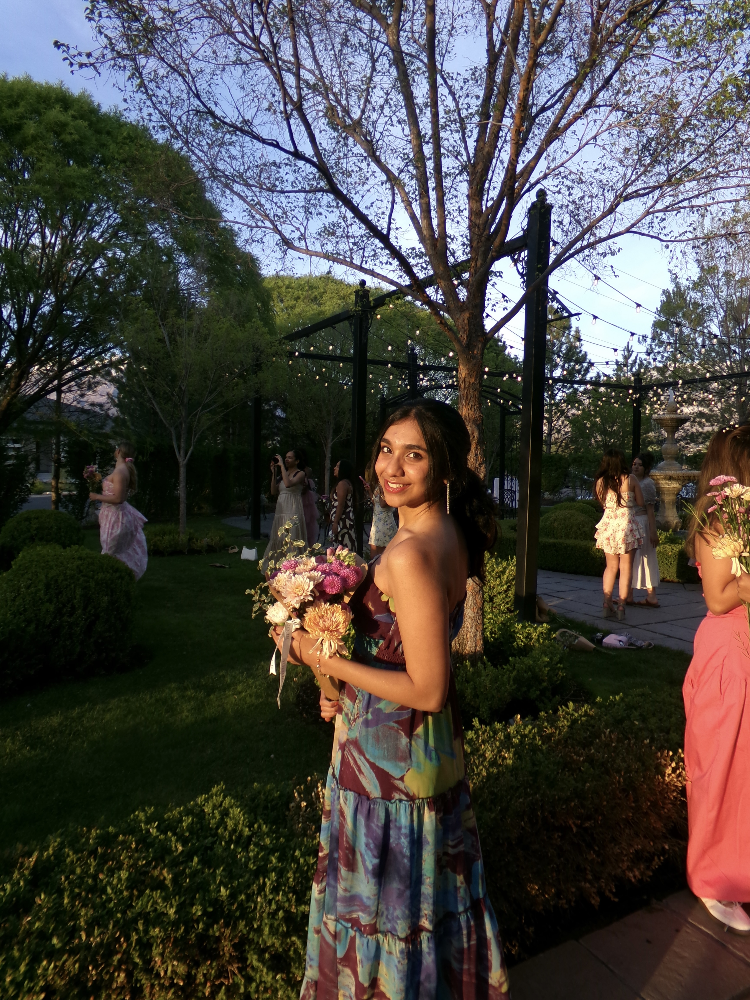
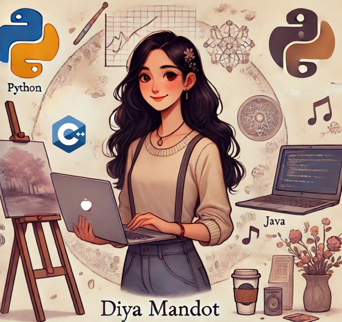
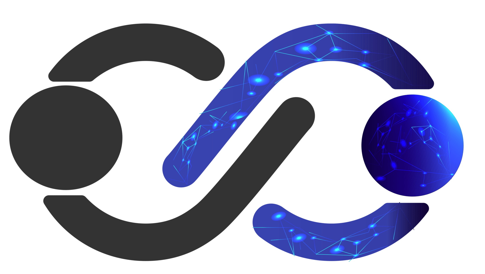
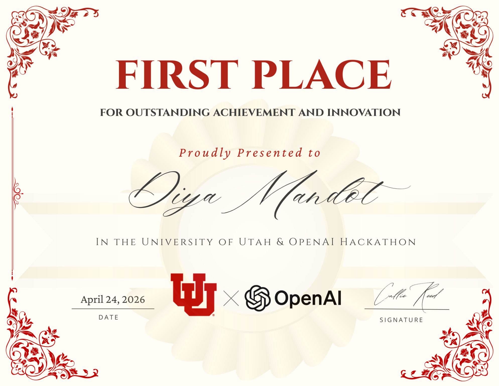

Diya Mandot
I'm equal parts technical and creative. I build AI systems by day and paint, sing, and hunt for good coffee the rest of the time. I think the best work happens when you bring both sides to the table.

People I've talked to.
Through the Kahlert Initiative, the AI Symposium, and a habit of just asking, I've gotten to sit with people who genuinely changed how I think. Curiosity gets you into rooms you don't always expect.

Karl Sun
Co-Founder & Former CEO Lucid Software"Talking to Karl changed how I think about building software that scales without losing its soul."

Steve Shillingford
Chief Executive Officer DeepSee.ai"Steve showed me what it looks like to build AI with conviction, and the discipline to know what not to build."

Jennifer Smith
Executive Vice President Zions Bancorporation"Jennifer made it clear that the most important security is the kind that earns trust, not just compliance."

William Barkley
VP of Product NVIDIA"William gave me a new frame for thinking about AI infrastructure, and why what's invisible usually matters most."

Telle Whitney
Co-Founder, Grace Hopper Celebration Former CEO, AnitaB.org"Telle reminded me that the most powerful technology is built by people who refuse to be invisible."
A little bit of
everything.
CS + AI + FinTech at the University of Utah Honors College, graduating December 2026. My dad is in tech, my mom was a textile designer. I ended up somewhere in between: someone who builds things and can't stop thinking about how they look and feel.
11 years of Hindustani classical music, national TV in India, paintings sold to fund hospital donations, and a running list of coffee shops ranked by vibe and iced coffee quality. Still figuring out how to weave all of it together, and honestly, that's the best part.

Where I've worked.
Summer Analyst — Tax Engineering
Goldman Sachs
New York, summer 2026. Tax Engineering team. Goldman wasn't on my radar until it was, and now I'm excited to see what I get to build there.
Adobe Creative Consultant & Ambassador
University of Utah
Helping students in the Adobe Creative Commons with Premiere, Illustrator, and Express. Completed all 12 Adobe badges. One of the parts of my week I genuinely look forward to.
AI & ML Engineering Intern
Western Governors University
Built WGU's ML model evaluation framework on Databricks and MLflow, plus a Genie-based Jira evaluator to automate Definition of Ready checks.
IT Security Intern
Zions Bancorporation
Cloud security reviews, IAM frameworks, NIST and SOX compliance. Came in knowing the theory, left understanding where it breaks in practice.
Associate Software Developer Intern
Western Governors University
Backend APIs in Node.js and AWS, transfer student data pipelines through Kafka and Salesforce. Wrote the tests, shipped to production.
AI & ML Intern
CourtEasyAI × Microsoft for Startups
Scaled a RAG pipeline to 10M+ legal documents and 5K+ daily queries. Benchmarked 8 LLM families against LegalBench: cut hallucinations 35%, improved retrieval 28%.

Things I've built.
AI & HCI for
Public Policy
Selected for the nationally competitive SPUR program, one of those things you apply for half-convinced it won't happen. I'm building LLM pipelines to analyze 600+ FDA public comments on ALS drug policy, then checking them against human-coded data to see where the model gets it right, and where it confidently doesn't.
Independent Research
BioGraphRag
A knowledge graph chatbot built on 1M+ biomedical entities (proteins, genes, diseases) that actually answers medical questions well. 40% accuracy improvement, sub-500ms latency. Started as a research project and turned into one of the things I'm most proud of building.
SaveSaltLake
Built with two other female developers for the Technovation Girls Challenge. The Great Salt Lake is disappearing, so we made an app to help people actually care about that, through gamified conservation and real community feedback. One of my earliest projects and still one of my favorites.
Awards & recognition.
PiecesOfThem
University of Utah × OpenAI · April 2026
Sanfilippo Syndrome is rare, fatal, and affects children. We built a RAG system to automate FDA drug approval paperwork for families fighting it. The problem made us want to get it right. And we did.

Selected for SPUR
University of Utah Research Program
Faculty-mentored research fellowship. Building LLM pipelines to analyze 600+ FDA public comments on ALS drug policy and benchmarking against human-coded data.
Kahlert Impact Prize
University of Utah
Recognized for leadership and community impact within the Kahlert School of Computing.
CommunityFlow AI
Intermountain Health Hackathon
Intermountain's real-time staffing and supply workflow: MS Forms → email chains → Excel. We rebuilt the whole thing with an AI routing layer in 6 hours.
Visit communityflow-ai.com →- AI interprets and classifies incoming requests in real time
- Intelligently routes staffing vs. material delivery needs
- Chatbot lets users submit requests in seconds from simple prompts
VoltVault
Wilkes Center for Climate Science & Policy
Turned parked EV batteries into a distributed grid storage network. Built in 24 hours, pitched to climate science judges, placed 3rd.
- Engineered a bidirectional charger system to optimize grid energy storage
- Grounded in real datasets on EV adoption and grid demand
- Full pitch to climate science & policy judges
The toolkit.
Languages
AI / ML
Frameworks & Cloud
Tools & Design
Not just code.
My ideal Saturday: coding in the morning, painting in the afternoon, singing at night, all with coffee nearby. Engineering and art have never felt like opposites to me. Same instinct, different outputs.


Beyond class.

Student AI Symposium — Co-Chair & Host
150+ people, Marriott Library. Brought in NVIDIA's VP of Product, ran lightning talks, moderated a panel with the U's Chief AI Officer, and gave my own talk: "AI isn't our tool, it's our reflection."
Read the Article →AI Tinker Lab — Lead
Running a hands-on AI lab where students actually build things. The space I wished existed when I was starting out.
Goff Scholars — Product Owner
Designed Korn Ferry's AI Value Score, validated $1.3M in Unilever savings with McKinsey, and mapped a $576K funding gap for a community health clinic. Real clients, real stakes.
Adobe Express Web Design Challenge
Redesigned the TECH-MOMS non-profit website working directly with their CEO.
View the site →Program Vice President — Kahlert Initiative
Curated the Tech Innovator Series by cold-emailing founders and executives until they said yes. Karl Sun, Steve Shillingford, Jennifer Smith.
Let's connect.
If you made it this far, I'd love to hear from you. Heading to Goldman Sachs this summer, then figuring out what's next after December 2026. Always happy to talk about work, ideas, or the best coffee shop you've been to lately.